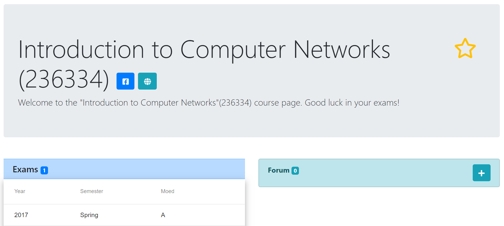
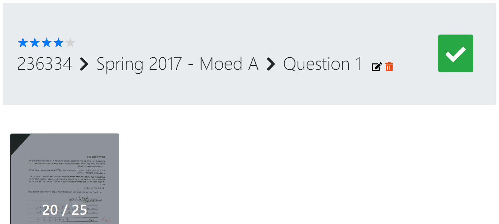
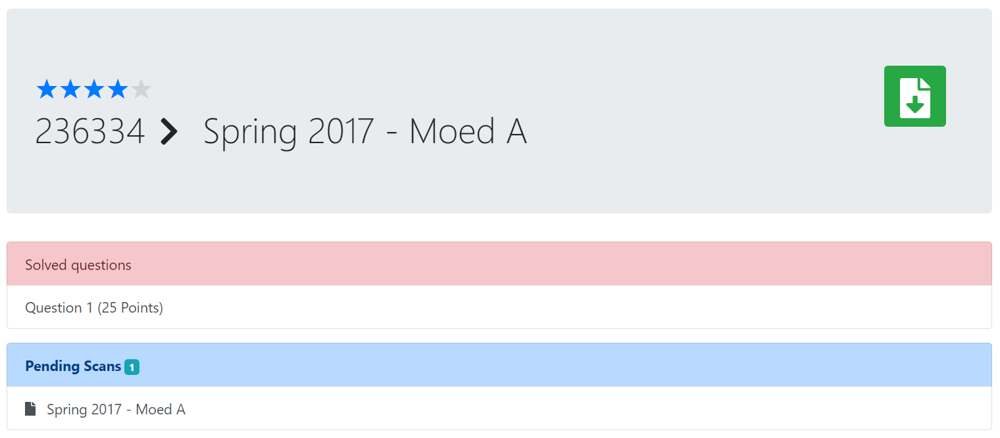
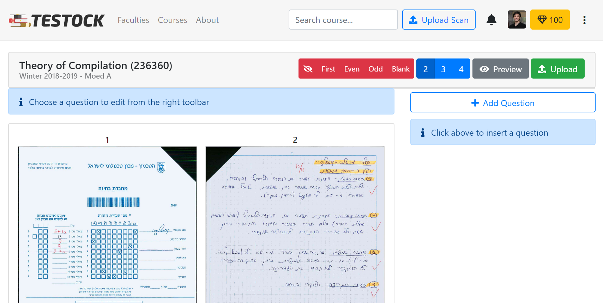
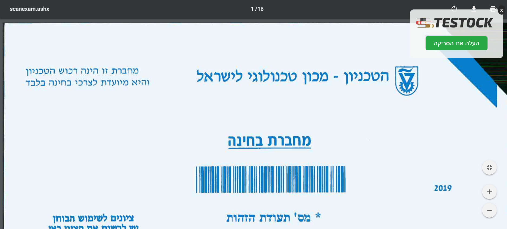
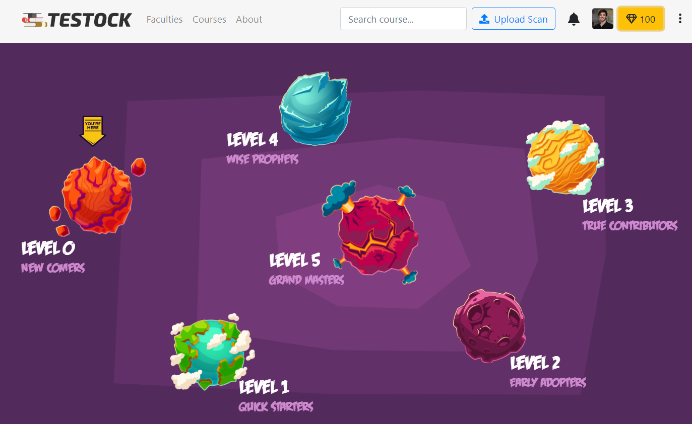

Hi there, first time in Testock? Don’t worry! Here is a short guide to help you with your first steps in the smartest solutions database ever created.
In Testock you will find a good solution for almost every possible question from previous exams.
The solutions are available thanks to the contribution of students who took a course and donated their scan after the exam.
Generally, each faculty is divided into courses.
In every course page you can see a table of all available exams in our database – try to sort it by year or semester.
You can also easily access the course’s Facebook group, webcourse, and even add it to your favorite courses list.

After selecting a question, you will be redirected to the question’s page.
There you can find all available solutions for this question and learn from the best answer!
By marking the question as solved you may track your personal progress and rate the question difficulty.
Your rating will help other students to estimate the question’s difficulty.

One of the most powerful feature in our system is the ability to download – what we call – a “super-scan”!
A scan that contains the best solutions for a single exam, automatically generated by Testock! Make sure you don’t miss it.
Do you have a question regarding a specific question? Maybe some general question about the course material?
You can ask questions and create topics either in every course page or in every question page.
When someone comments on your topic you will get a notification!
Did you get an outstanding grade on one of the courses you took? You rock!
Let’s see how you can quickly add your scan to our database and become the hero of your semester.
First, press on the “Upload Scan” button, and then browse for your scan or simply drag-and-drop it. Wait couple of seconds until we automatically fetch the meta-data from your scan, and you’ll get the following interface:

This interface has many tools that will help you select the solutions from your scan easily:
The red buttons allow you to hide redundant pages such as the first page that contains your personal information, even \ odd pages, and all blank pages (using AI algorithms! Guess what - it really works!). You can also hide specific pages by hovering them and selecting the trash icon. You can restore the pages you have hidden at any time.
The blue buttons control the number of pages displayed in a row.
The grey “Preview” button shows you the solutions you selected so far. Currently it is empty since you haven’t added questions yet.
Now, let’s add your first question!
Click on the “Add Question” button, and then type the question number and total grade. Then, simply select all pages that contain your brilliant answer to this question; you’ll see the pages you selected in the menu on the right-side of the screen.
Oh no! What if a page contains answers for more than one question or if it contains draft writings? Calm down, you can crop the page and select just a part of it! Just hover a scan page with your mouse and select the crop icon.
Choose the part of the page that contains your solution, and when done simply press on the “Done” button. When you are done selecting all parts of the solution of a question, simply click the ‘✓’ icon of the question. When you are done selecting all the solutions of your scan, press on the green “Upload” button (don’t forget to preview it before and verify that you didn’t miss anything).
If selecting the questions has made you tired (come on, you can do it!), then you are able to upload a scan as a “pending scan”, which means that your entire scan will be uploaded and other users who want to contribute will be able to select the solutions you skipped.
Notice that when uploading a pending scan, only pages you didn’t hide will be uploaded, so make sure you hide the first page with your details.
For a quick scan upload from your grades.technion.ac.il website you can use our special Chrome plug-in!
Pending scan is not a matter of fate!
If you come across a pending scan, you can select the solutions it contains and help other students.
You can do so by visiting the pending scan from the exam page and selecting “Crop Pending Scan” button.
An interface similar to the upload page will be opened, with the pending scan available like as you uploaded it right now.
If you come across a pending solution, you can make a small contribution on the way and select the solution you found, so that other students won’t have to search for it too.
Click the blue ‘Crop this solution, help others and earn some points!’ button and then you will be able to select the solution on the scan.
After you selected the solution, click ‘Done’. Thanks for your effort!
For almost every action on the website (such as uploading a scan or creating a new topic) you’ll get golden diamonds!
With enough diamonds you can travel in the Testock universe and discover new planets.
Every planet has its own unique and cute monsters – Try to Catch 'Em All!
